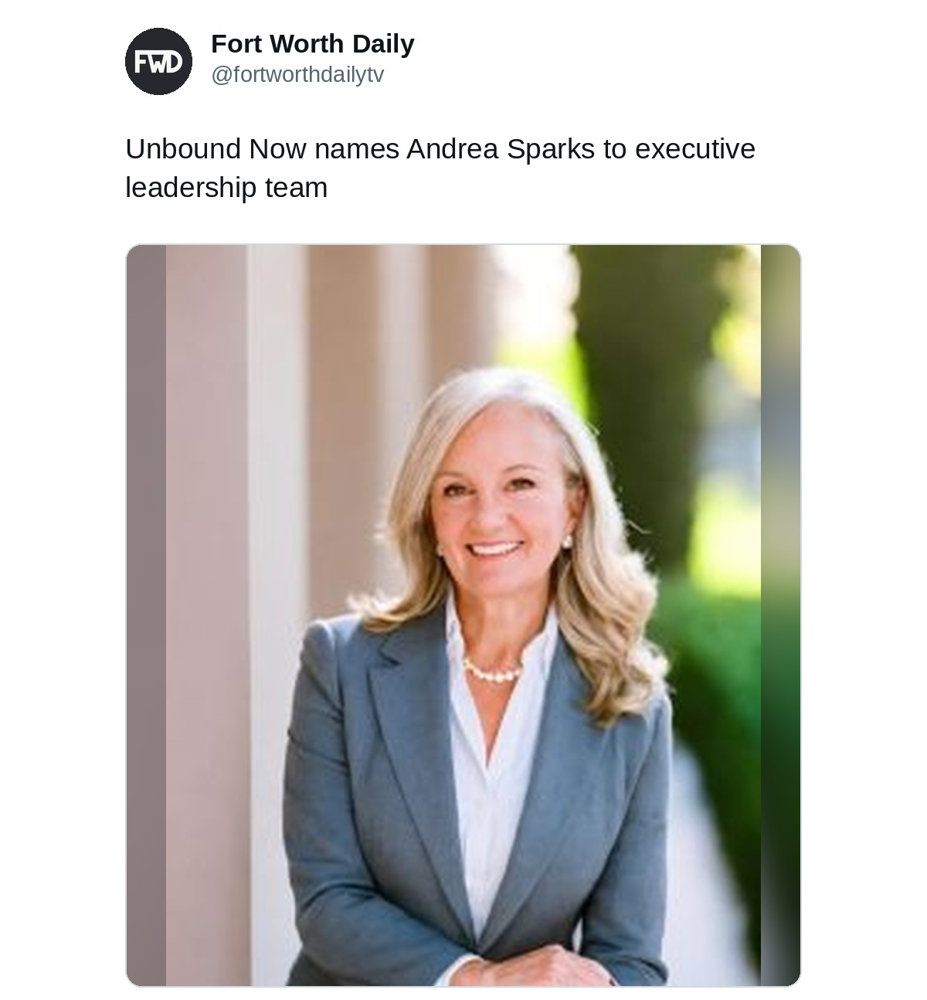

FWD
Fort Worth Daily
Just now · 🌎 · other · template writer
Just now · 🌎 · other · template writer
Unbound Now, a national anti-trafficking organization, announced this week that Andrea Sparks has joined its executive leadership team as Chief Government and Strategic Relations Officer.

FWD
story + scoring
{
"source": "Fort Worth Report",
"kind": "rss",
"score": 0.7376,
"relevance": 0,
"url": "https://fortworthreport.org/2026/11/20/unbound-now-names-andrea-sparks-to-executive-leadership-team/",
"image_license": "cc-by-nd",
"image_credit": "Photo: Fort Worth Report (CC BY-ND)"
}